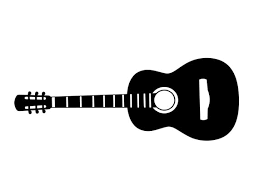

My Non-Tech Hobbies
Beyond coding, here’s what keeps my creativity alive!

Guitar
- Playing acoustic guitar for relaxation and fun.
- Enjoy composing simple tunes and learning new songs.
- Love jamming with friends and exploring different genres.

Singing & Open Mic
- Participate in open mic events and college fests.
- Enjoy singing old Bollywood and Indie songs.
- Believe music is a great way to connect with people.
Reading Novels
- Avid reader of fiction, mystery, and self-development books.
- Love immersing myself in new worlds and perspectives.
- Favorite authors include Bitter Edge and The Silent Patient.
Sketching
- Enjoy sketching portraits and landscapes in my free time.
- Find sketching therapeutic and a great way to express creativity.
- Experiment with pencils, charcoal, and oil pastels.

Art & Craft
- Love exploring different art forms like painting and origami.
- Enjoy making handmade gifts and decorations.
- Believe art adds color and joy to life!